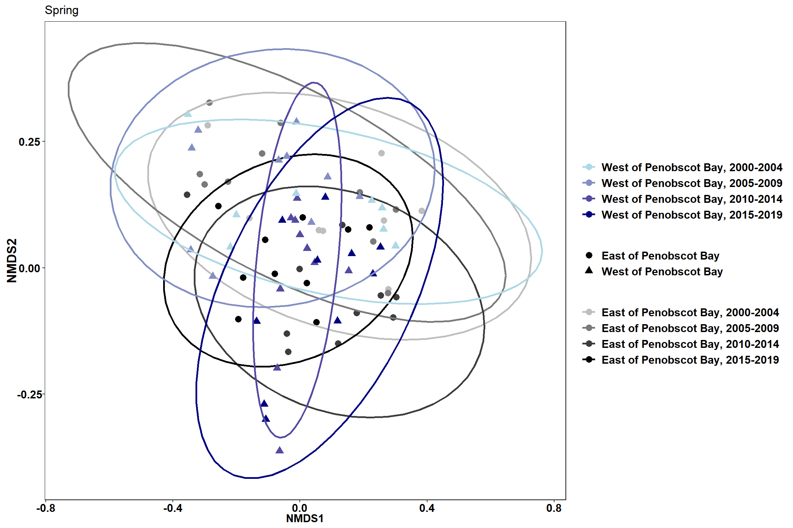
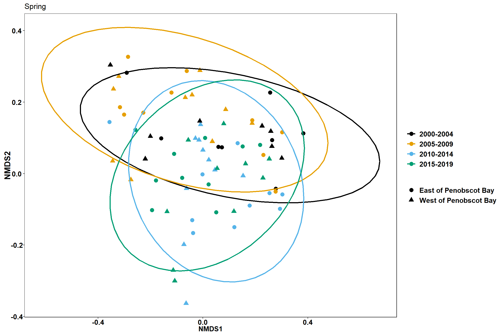

Nonmetric Multidimensional Scaling- Top 50 abundance species
Data
- Top 50 abundant species
- average across depth strata using the NOAA IEA technical document
Set up data for NMDS
- split community matrix into two dataframes- one for grouping variables and one for species biomass
- calculate dissimilarity matrix with Bray-Curtis distances
#set up final grouping data into dataframe
ME_group_data<-trawl_data_arrange[, c(1,2,3,55,56,57,58)]
ME_NMDS_data<-as.matrix(trawl_data_arrange[,4:53])
#calculate the distance matrix
ME_NMDS_distance<- vegdist(ME_NMDS_data, method="bray")Run the NMDS and extract scores
- change in community composition
- uses rank order
- stress < 0.2 is good, < 0.1 is great, <0.05 is excellent representation in reduced dimensions
ME_NMDS=metaMDS(ME_NMDS_distance, # Our community-by-species matrix
k=2, # The number of reduced dimensions
method="bray",
trymax=200) #increase iterations## Run 0 stress 0.1621597
## Run 1 stress 0.165904
## Run 2 stress 0.1662412
## Run 3 stress 0.1659047
## Run 4 stress 0.1697835
## Run 5 stress 0.1621597
## ... Procrustes: rmse 7.302489e-05 max resid 0.0009046809
## ... Similar to previous best
## Run 6 stress 0.1826034
## Run 7 stress 0.1786665
## Run 8 stress 0.1659039
## Run 9 stress 0.1786538
## Run 10 stress 0.1754058
## Run 11 stress 0.1699903
## Run 12 stress 0.1818724
## Run 13 stress 0.1624895
## ... Procrustes: rmse 0.01000835 max resid 0.1363788
## Run 14 stress 0.1666044
## Run 15 stress 0.1750511
## Run 16 stress 0.1659053
## Run 17 stress 0.1660865
## Run 18 stress 0.1697833
## Run 19 stress 0.1666054
## Run 20 stress 0.1621604
## ... Procrustes: rmse 0.0002836816 max resid 0.003670803
## ... Similar to previous best
## *** Solution reached#extract NMDS scores for ggplot
data.scores = as.data.frame(scores(ME_NMDS))
#add columns to data frame
data.scores$Stratum = trawl_data_arrange$Stratum
data.scores$Region = trawl_data_arrange$Region
data.scores$Year = trawl_data_arrange$Year
data.scores$Season= trawl_data_arrange$Season
data.scores$Year_groups= trawl_data_arrange$YEAR_GROUPS
data.scores$Year_decades= trawl_data_arrange$YEAR_DECADES
data.scores$Region_new=trawl_data_arrange$REGION_NEW
data.scores$Region_year=trawl_data_arrange$REGION_YEAR
data.scores$Season_year=trawl_data_arrange$SEASON_YEARPlots
Region

Time

Season